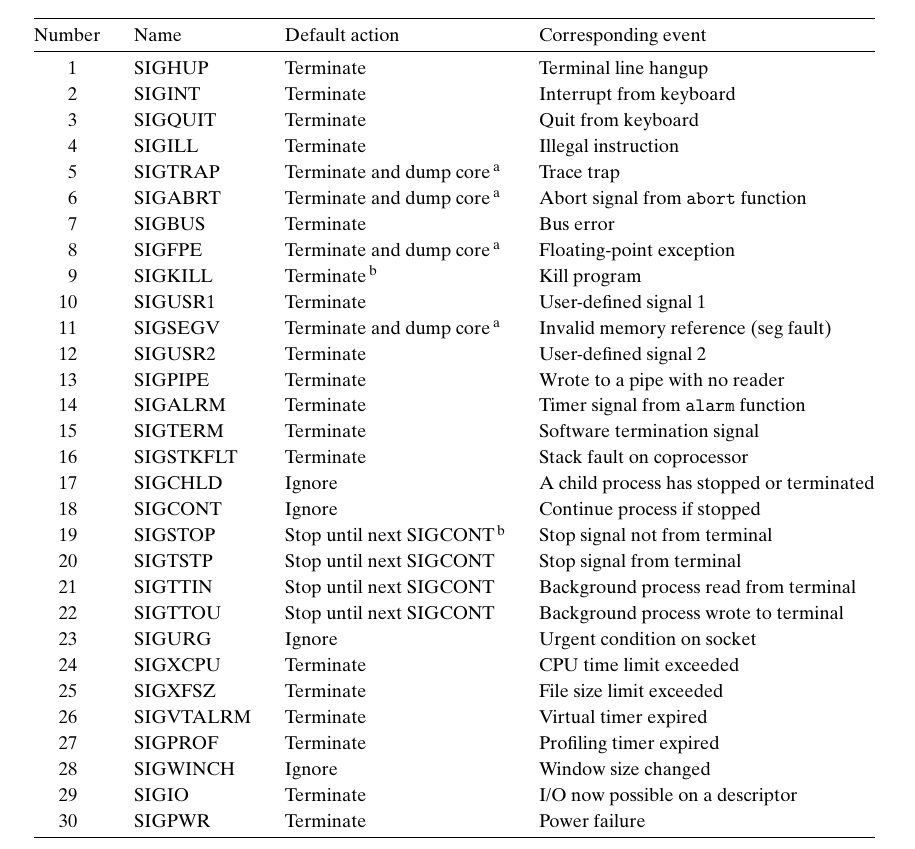
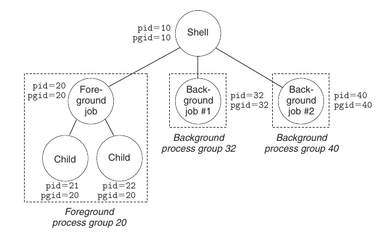

2. signal
1. Linux 信号🧐
信号是进程间通信的一种方式，就行为而言它是一种软件形式的异常。
Linux signals

(1). 通信过程🧐
内核为每个进程维护两个位向量，表示与之相关的信号状态
pending: 待处理 (未决) 的信号集合blocked: 被阻塞的信号集合
内核通过更新进程 $P$ 的 pending 向量，向其发送信号。发信号原因可能出于
- 内核检测到一个系统 event，例如除零错误 或 子进程终止
- 其他进程调用了
kill，显式要求内核发送信号给目的进程
当内核把进程 $P$ 从 kernel mode 转为 user mode 时 (从系统调用返回 / 完成上下文切换)，$P$ 计算 rcv = pending & ~blocked ，若非空，内核从中选取某个信号 $k$ (typically smallest) 让 $P$ 强制接收，然后执行接收后的行为，每种信号都有默认行为，是下面之一:
- 进程终止 (e.g.
SIGKILL) - 进程终止并转储内存
- 进程挂起直到被
SIGCONT重启 - 进程忽略该信号 (e.g.
SIGCHLD)
进程可以更改默认行为 (捕获); 完成接收行为后，就将控制传回 $P$ 的下一条指令。
任何时刻，同一类型只可能有一个 pending 信号，同类型的其他信号会被丢弃。
(2). 进程组🧐
Unix 提供了很多发送信号的机制，这些机制都基于进程组这个概念。每个进程都只属于一个进程组，进程组由一个正整数 ID 标识。
#include <unistd.h>
pid_t getpgrp(void);
int setpgid(pid_t pid, pid_t pgid);
getpgrp: 返回当前进程的进程组 IDsetpgid: 默认情况下，子进程和它的父进程属于同一个组，此函数将pid的进程组号改为pgidpid=0表示pid =调用进程pgid=0表示用pid指定的进程作为进程组 ID
(3). Unix Shell 机制🧐
Unix Shell 使用作业 (job) 这个概念表示对一条命令行求值而创建的进程
- 任意时刻，至多有一个前台作业，可能有 0 / 多 个后台作业，例如，
$ ls | sort会创建由两个进程组成的前台作业
 - 键入
Ctrl+C会导致内核发送SIGINT到前台进程组的每个进程，默认会终止前台进程 - 键入
Ctrl+Z会导致内核发送SIGTSTP到前台进程组的每个进程，默认会挂起前台作业
2. 相关 API🧐
(1). 发送信号🧐
#include <sys/types.h>
#include <signal.h>
int kill(pid_t pid, int sig);
pid > 0: 发送信号sig给pidpid = 0: 发送信号sig给 调用进程所在进程组中的每个进程pid < 0: 发送信号sig给 进程组 $|$pid$|$ 中的每个进程
#include <unistd.h>
unsigned int alarm(unsigned int secs);
安排内核在 secs 秒后发送 SIGALRM 给调用进程，并取消待处理的 alarm，返回前一次 alarm 剩余的秒数 (若没有返回 0); 如果 secs = 0，不会安排新的 alarm.
(2). 接收信号🧐
进程可以通过 signal 函数修改信号关联的默认行为 (除了 SIGSTOP & SIGKILL)
#include <signal.h>
typedef void (*sighandler_t) (int);
sighandler_t signal(ing signum, sighandler_t handler);
handler:
SIG_IGN: 忽略类型为signum的信号SIG_DFL: 为类型为signum的信号恢复默认行为- 否则，
handler指向信号处理函数，调用此函数被称作捕获信号
处理程序 return 后，控制返回主程序被中断的位置。注意信号处理程序本身也可以被信号中断。
(3). 阻塞信号🧐
Linux 有两种阻塞机制:
- implicit: 内核默认阻塞 当前处理程序正在处理的信号类型，i.e. 当 handle $S$ 正运行时若收到 $s$ 信号，
pending(s) = blocked(s) = 1 - explicit: 调用
sigprocmask和它的辅助函数们
#include <signal.h>
int sigprocmask(int how, const sigset_t *set, sigset_t *oldset);
int sigemptyset(sigset_t *set);
int sigfillset(sigset_t *set);
int sigaddset(sigset_t *set, int signum);
int sigdelset(sigset_t *set, int signum);
int sigismember(const sigset_t *set, int signum);
sigprocmask 的行为依赖于 how 的值:
SIG_BLOCK: 把set中的信号加到blocked中 (blocked = blocked | set)SIG_UNBLOCK: 从blocked中删除set中的信号 (blocked = blocked & ~set)SIG_SETMASK:blocked = set
如果 oldset 非空，blocked 被修改之前的值保存在 oldset 中。
3. 编写信号处理程序🧐
(1). 基本原则🧐
- handler 要尽可能简单
- 在 handler 中只调用异步信号安全的函数
- 异步安全: 要么该函数是可重入的，要么它不能被信号处理程序中断
- 保存和恢复
errno- 许多 Linux 异步安全的函数都会在出错时设置
errno，在 handler 中调用这样的函数可能影响主程序中依赖errno的函数 (handler 不返回则不需要)
- 许多 Linux 异步安全的函数都会在出错时设置
- 访问全局数据结构时，阻塞所有信号
- 访问全局数据结构的指令序列不可被中断
- 用
volatile声明全局变量- 编译器优化时可能认为被 handler 改变的变量没发生变化，因而使用缓存中的值
(2). 同类信号不排队🧐
只要有一个子进程终止或停止，内核就会发送 SIGCHLD 给父进程。
#include "csapp.h"
void handler1(int sig);
void handler2(int sig);
int main() {
int i, n;
char buf[MAXBUF];
if (signal(SIGCHLD, handler2) == SIG_ERR)
unix_error("signal error");
for (i = 0; i < 3; ++i) {
if (Fork() == 0) {
printf("Hello from child %d\n", (int)getpid());
exit(0);
}
}
while (1);
}
void handler1(int sig) {
int olderrno = errno;
if (waitpid(-1, NULL, 0) < 0)
sio_error("waitpid error");
Sio_puts("Handler reaped child\n");
Sleep(1);
errno = olderrno;
}
void handler2(int sig) {
int olderrno = errno;
while (waitpid(-1, NULL, 0) > 0) {
Sio_puts("Handler reaped child\n");
}
if (errno != ECHILD)
sio_error("waitpid error");
Sleep(1);
errno = olderrno;
}
该程序的目的是回收所有终止的子进程。
handler1: 可能处理第一个SIGCHLD时， 后两个SIGCHLD已发送，由于 pending 只有一个位置，最后一个SIGCHLD会被丢弃handler2: 每收到SIGCHLD时可能有多个子进程终止，因而尽可能地回收是正确的
由于同类信号不排队，因此不能用信号对其他进程发生的事件计数。
(3). 同步并发流🧐
int main(int argc, char **argv) {
int pid;
sigset_t mask_all, prev_all;
Sigfillset(&mask_all);
Signal(SIGCHLD, handler);
initjobs();
while (1) {
if ((pid = Fork()) == 0) {
Execve("/bin/date", argv, NULL);
}
Sigprocmask(SIG_BLOCK, &mask_all, &prev_all);
addjob(pid);
Sigprocmask(SIG_SETMASK, &prev_all, NULL);
}
exit(0);
}
void handler(int sig) {
int olderrno = errno;
sigset_t mask_all, prev_all;
pid_t pid;
Sigfillset(&mask_all);
while ((pid = waitpid(-1, NULL, 0)) > 0) {
Sigprocmask(SIG_BLOCK, &mask_all, &prev_all);
deletejob(pid);
Sigprocmask(SIG_SETMASK, &prev_all, NULL);
}
if (errno != ECHILD)
Sio_error("waitpid error");
errno = olderrno;
}
int main(int argc, char **argv) {
int pid;
sigset_t mask_all, mask_one, prev_one;
Sigfillset(&mask_all);
Sigemptyset(&mask_one);
Sigaddset(&mask_one, SIGCHLD);
Signal(SIGCHLD, handler);
initjobs();
while (1) {
Sigprocmask(SIG_BLOCK, &mask_one, &prev_one); /* Block SIGCHLD */
if ((pid = Fork()) == 0) {
Sigprocmask(SIG_SETMASK, &prev_one, NULL); /* Unblock SIGCHLD */
Execve("/bin/date", argv, NULL);
}
Sigprocmask(SIG_BLOCK, &mask_all, NULL);
addjob(pid);
Sigprocmask(SIG_SETMASK, &prev_one, NULL); /* Unblock SIGCHLD */
}
exit(0);
}
该程序是一个典型的 Unix Shell 结构，父进程维护一个全局 job list；main 中的 addjob() 和 handler 中的 deletejob() 存在竞争，如果 deletejob() 赢了，就会导致同步错误
- 父进程
fork后，内核立马调度子进程执行完，发送SIGCHLD，然后调用handler
父进程要保证先 addjob() 再 deletejob()，因此可以在 Fork 前阻塞 SIGCHLD，而在 addjob() 后解除阻塞，这样就保证了 handler 一定在 addjob() 后调用。 (注意子进程会继承父进程的阻塞集合)
(4). 显式等待信号🧐
有时主程序需要显式等待收到某个信号，例如:
- Linux Shell 创建一个前台作业时，要显式等待作业终止、被 SIGCHLD handler 回收后，再解析下一条命令
eg
#include "csapp.h"
volatile sig_atomic_t pid;
int main(int argc, char **argv) {
sigset_t mask, prev;
Signal(SIGCHLD, sigchld_handler);
Signal(SIGINT, sigint_handler);
Sigemptyset(&mask);
Sigaddset(&mask, SIGCHLD);
while (1) {
/* Block SIGCHLD: main and sigchld_handler race on pid */
Sigprocmask(SIG_BLOCK, &mask, &prev);
if (Fork() == 0)
exit(0);
pid = 0;
Sigprocmask(SIG_SETMASK, &prev, NULL);
/* Wait SIGCHLD to be received (wasteful) */
while (!pid);
/* Do some work after receiving SIGCHLD */
printf("---\n");
Sleep(2);
}
exit(0);
}
void sigchld_handler(int s) {
int olderrno = errno;
pid = waitpid(-1, NULL, 0);
errno = olderrno;
}
void sigint_handler(int s) {
// exit(0);
}
int main(int argc, char **argv) {
sigset_t mask, prev;
Signal(SIGCHLD, sigchld_handler);
Signal(SIGINT, sigint_handler);
Sigemptyset(&mask);
Sigaddset(&mask, SIGCHLD);
while (1) {
Sigprocmask(SIG_BLOCK, &mask, &prev); /* Block SIGCHLD */
if (Fork() == 0)
exit(0);
pid = 0;
while (!pid)
sigsuspend(&prev);
Sigprocmask(SIG_SETMASK, &prev, NULL);
printf("---\n");
Sleep(2);
}
exit(0);
}
主程序以无限循环的方式等待 pid 变为非 0，这样很浪费处理器资源。而如果:
while (!pid) { pause(); }pause会被其他信号打断，因而需要循环；问题在于，如果在判断条件和pause之间收到 SIGCHLD，pause永远睡眠
while (!pid) { sleep(1); }- 太慢了。如果用
nanosleep一类的高精度函数也是不可接受的，间隔太小太浪费，太大又太慢
- 太慢了。如果用
#include <signal.h>
int sigsuspend(const sigset_t *mask);
sigsuspend 用 mask 替换当前阻塞集合，然后挂起当前进程，直到收到一个信号 $s$:
- 若 $s$ 的默认行为是终止，程序直接退出
- 否则，调用 handler，返回后恢复原本的阻塞集合
sigsuspend 等价于下述代码的原子版本:
1 2 3 | |
原子属性保证了 1-2 行的调用同时发生，不可中断。针对 Shell 例子的使用方法为:
- 先阻塞
SIGCHLD，再用sigsuspend取消对SIGCHLD的阻塞，保证了不会在pause和循环条件之间执行SIGCHLD的 handler